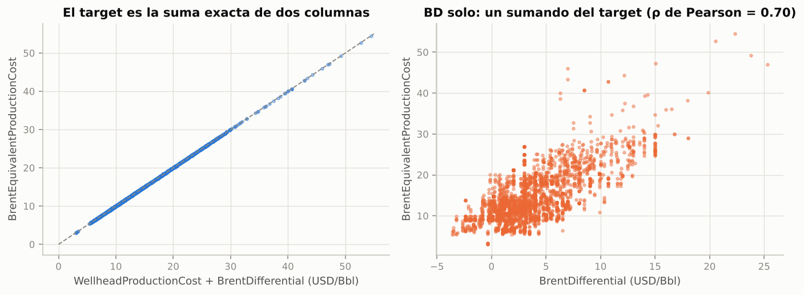
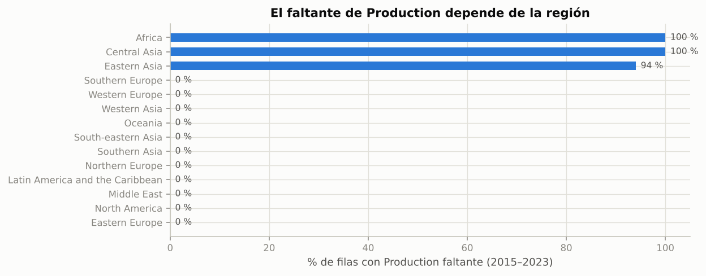
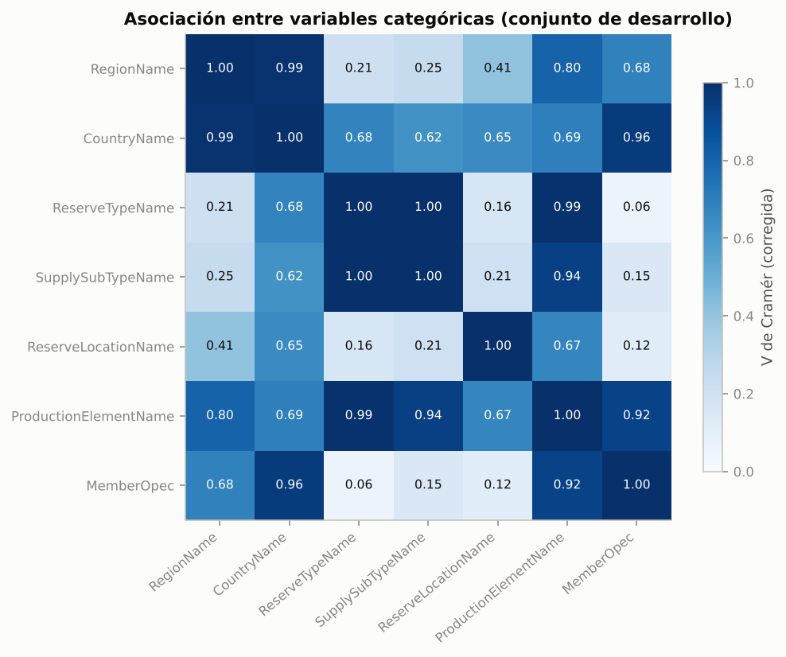
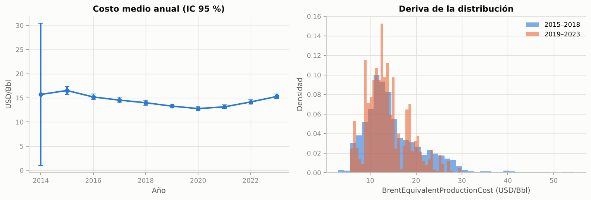

1. Datos y EDA mejorado#
Este capítulo retoma el EDA del primer entregable y lo corrige y amplía con los hallazgos encontrados durante el modelado (Sección 7.1 de la guía). Los cambios principales son:
# |
Corrección / mejora |
Impacto en el modelado |
|---|---|---|
1 |
Se verificó una identidad contable exacta: |
|
2 |
La misma identidad explica el VIF ≈ 10⁹ y el PC5 ≈ 0 del entregable 1 ( |
El VIF se recalcula sin la combinación lineal exacta |
3 |
Mecanismo de faltantes con evidencia: 2014 llega casi vacío (99.6 %) y, en 2015–2023, |
Imputación por mediana + indicador de faltante dentro del Pipeline |
4 |
Información mutua y R² univariado (auditoría de fuga cuantitativa) |
Se confirma qué variables son proxies del target |
5 |
V de Cramér entre categóricas: jerarquía País → Región → OPEP |
Redundancia esperada; se mantiene por los modelos de árboles |
6 |
Tamaños de efecto (ε²) con corrección de Holm para todas las categóricas |
Prioridad de variables y espacio de búsqueda |
7 |
Deriva temporal (2015–2018 vs 2019–2023) |
Justifica |
8 |
|
Se eliminan (en el entregable 1 |
Las decisiones que alimentan el modelo (información mutua, R² univariado) se calculan solo con el conjunto de desarrollo (80 %), nunca con el de prueba.
import sys, warnings
sys.path.insert(0, "..")
warnings.filterwarnings("ignore")
import numpy as np
import pandas as pd
import matplotlib.pyplot as plt
from scipy import stats
from src import config as C
from src.data import load_raw, load_model_data, split_dev_test
from src.stats_tests import holm
from src.viz import set_style, SERIES, INK2, MUTED
C.set_global_seed()
set_style()
pd.set_option("display.float_format", lambda v: f"{v:,.3f}")
raw = load_raw()
df = load_model_data()
dev, test = split_dev_test(df)
print(f"Filas crudas: {raw.shape[0]:,} | con target: {df.shape[0]:,} | desarrollo: {len(dev):,} | prueba: {len(test):,}")
print(f"Activos: {df[C.GROUP].nunique()} (desarrollo {dev[C.GROUP].nunique()}, prueba {test[C.GROUP].nunique()}; sin solapamiento: "
f"{len(set(dev[C.GROUP]) & set(test[C.GROUP])) == 0})")
Filas crudas: 4,595 | con target: 3,834 | desarrollo: 3,085 | prueba: 749
Activos: 695 (desarrollo 556, prueba 139; sin solapamiento: True)
1.1 Hallazgo clave: identidad contable en el target#
El VIF de 1.5 × 10⁹ y la quinta componente principal con varianza ≈ 0 del entregable 1 indican una combinación lineal exacta entre variables. Se verifica directamente:
d = raw.dropna(subset=[C.TARGET, "WellheadProductionCost", "BrentDifferential"])
res_p = d[C.TARGET] - (d["WellheadProductionCost"] + d["BrentDifferential"])
d2 = raw.dropna(subset=["BrentEquivalentDevelopmentCost", "WellheadDevelopmentCost", "BrentDifferential"])
res_d = d2["BrentEquivalentDevelopmentCost"] - (d2["WellheadDevelopmentCost"] + d2["BrentDifferential"])
identidad = pd.DataFrame({
"Identidad": ["BEPC = WPC + BD", "BEDC = WDC + BD"],
"Filas verificadas": [len(res_p), len(res_d)],
"Error absoluto máx.": [res_p.abs().max(), res_d.abs().max()],
"% filas con error ≤ 0.01": [100 * (res_p.abs() <= 0.0101).mean(), 100 * (res_d.abs() <= 0.0101).mean()],
})
identidad
| Identidad | Filas verificadas | Error absoluto máx. | % filas con error ≤ 0.01 | |
|---|---|---|---|---|
| 0 | BEPC = WPC + BD | 3023 | 0.010 | 100.000 |
| 1 | BEDC = WDC + BD | 3511 | 0.010 | 100.000 |
fig, axes = plt.subplots(1, 2, figsize=(10, 3.8))
axes[0].scatter(d["WellheadProductionCost"] + d["BrentDifferential"], d[C.TARGET], s=6, alpha=0.4, color=SERIES[0])
axes[0].plot([0, 55], [0, 55], color=MUTED, lw=1, ls="--")
axes[0].set(xlabel="WellheadProductionCost + BrentDifferential (USD/Bbl)", ylabel="BrentEquivalentProductionCost",
title="El target es la suma exacta de dos columnas")
axes[1].scatter(d["BrentDifferential"], d[C.TARGET], s=6, alpha=0.4, color=SERIES[1])
axes[1].set(xlabel="BrentDifferential (USD/Bbl)", ylabel="BrentEquivalentProductionCost",
title="BD solo: un sumando del target (ρ de Pearson = %.2f)" % d[[C.TARGET, "BrentDifferential"]].corr().iloc[0, 1])
plt.tight_layout()

Interpretación. En el 100 % de las filas con datos completos el target es exactamente la suma de
WellheadProductionCost y BrentDifferential (el error máximo de 0.01 es redondeo a centavos). Lo
mismo ocurre con el costo de desarrollo. Consecuencias:
WellheadProductionCostes una fuga total y ya estaba excluida (correcto en el entregable 1).BrentDifferentialno es un proxy cualquiera: es un sumando del target. Incluirlo convierte parte del problema en una suma conocida, lo que infla el R² (≈ 0.85 vs ≈ 0.77 sin BD con el mismo modelo lineal).Desde negocio, el diferencial (calidad del crudo, transporte, descuento frente al Brent) puede conocerse antes que el costo de cabeza de pozo, por lo que no es ilegítimo en todos los escenarios de uso.
Decisión: el escenario principal (A, estructural) excluye BrentDifferential; el escenario
B lo incluye como análisis de sensibilidad. Ambos se comparan formalmente con el test de Clark-West
(B anida a A) en el capítulo 5.
1.2 Multicolinealidad corregida (VIF)#
El VIF se recalcula de dos formas: con el conjunto original (que contiene la combinación lineal
exacta) y sin BrentEquivalentDevelopmentCost (= WDC + BD).
from sklearn.linear_model import LinearRegression
def vif(frame):
X = frame.dropna().to_numpy(float)
out = {}
for j, c in enumerate(frame.columns):
others = np.delete(X, j, axis=1)
r2 = LinearRegression().fit(others, X[:, j]).score(others, X[:, j])
out[c] = 1 / max(1 - r2, 1e-12)
return pd.Series(out)
cols_orig = ["BrentDifferential", "WellheadDevelopmentCost", "BrentEquivalentDevelopmentCost", "WellheadProductionCost", "Production"]
cols_fix = ["BrentDifferential", "WellheadDevelopmentCost", "WellheadProductionCost", "Production"]
pd.DataFrame({"VIF original (E1)": vif(raw[cols_orig]), "VIF sin BEDC": vif(raw[cols_fix])})
| VIF original (E1) | VIF sin BEDC | |
|---|---|---|
| BrentDifferential | 8,261,402.992 | 1.068 |
| BrentEquivalentDevelopmentCost | 95,632,293.152 | NaN |
| Production | 1.107 | 1.107 |
| WellheadDevelopmentCost | 88,858,386.914 | 2.030 |
| WellheadProductionCost | 2.022 | 2.021 |
Interpretación. Al retirar la columna que es combinación lineal exacta, todos los VIF quedan en torno
a 2 o menos: la «multicolinealidad extrema» del entregable 1 no era una propiedad de los datos sino un artefacto
de la identidad contable (los VIF restantes están entre 1.07 y 2.03). Las variables numéricas que entran al modelo (Year, Production y, en el
escenario B, BrentDifferential) no presentan colinealidad problemática.
1.3 Mecanismo de los valores faltantes#
El entregable 1 clasificó los faltantes como «MAR o MNAR» de forma preliminar. Aquí se aporta evidencia.
miss_year = raw.assign(**{c: raw[c].isna() for c in ["Production", C.TARGET, "BrentDifferential"]}) \
.groupby("Year")[["Production", C.TARGET, "BrentDifferential"]].mean().mul(100)
miss_year.round(1).T
| Year | 2014 | 2015 | 2016 | 2017 | 2018 | 2019 | 2020 | 2021 | 2022 | 2023 |
|---|---|---|---|---|---|---|---|---|---|---|
| Production | 99.600 | 21.800 | 22.300 | 24.100 | 22.800 | 21.100 | 21.100 | 21.000 | 21.000 | 22.600 |
| BrentEquivalentProductionCost | 99.600 | 1.200 | 1.000 | 0.800 | 1.200 | 0.900 | 1.100 | 0.900 | 0.900 | 0.700 |
| BrentDifferential | 99.600 | 1.900 | 1.900 | 1.600 | 1.700 | 1.100 | 1.100 | 1.100 | 1.100 | 1.200 |
m = df.copy()
m["prod_missing"] = m["Production"].isna()
m_no2014 = m[m["Year"] > 2014]
a = m_no2014.loc[m_no2014["prod_missing"], C.TARGET]
b = m_no2014.loc[~m_no2014["prod_missing"], C.TARGET]
u = stats.mannwhitneyu(a, b)
rb = 1 - 2 * u.statistic / (len(a) * len(b))
tab = pd.crosstab(m_no2014["RegionName"], m_no2014["prod_missing"])
chi2, p_chi, dof, _ = stats.chi2_contingency(tab)
cramer = np.sqrt(chi2 / (tab.values.sum() * (min(tab.shape) - 1)))
pd.DataFrame({
"Prueba": ["Mann-Whitney: target (Production faltante vs observado, 2015–2023)",
"χ²: faltante de Production vs Región (2015–2023)"],
"Estadístico": [u.statistic, chi2], "p-valor": [u.pvalue, p_chi],
"Tamaño de efecto": [f"r biserial = {rb:.3f}", f"V de Cramér = {cramer:.3f}"],
})
| Prueba | Estadístico | p-valor | Tamaño de efecto | |
|---|---|---|---|---|
| 0 | Mann-Whitney: target (Production faltante vs o... | 1,004,365.000 | 0.000 | r biserial = 0.180 |
| 1 | χ²: faltante de Production vs Región (2015–2023) | 3,785.923 | 0.000 | V de Cramér = 0.994 |
fig, ax = plt.subplots(figsize=(9, 3.6))
rate = m_no2014.groupby("RegionName")["prod_missing"].mean().sort_values() * 100
ax.barh(rate.index, rate.values, color=SERIES[0], height=0.6)
ax.set(xlabel="% de filas con Production faltante (2015–2023)", title="El faltante de Production depende de la región")
for y_, v in enumerate(rate.values):
ax.text(v + 1, y_, f"{v:.0f} %", va="center", fontsize=8, color=INK2)
plt.tight_layout()

Interpretación.
En 2014 el 99.6 % de las filas no tiene
Production,BrentDifferentialni target: el año prácticamente no fue reportado (faltante estructural). Solo 3 filas de 2014 llegan al modelado.Entre 2015 y 2023 el faltante de
Productionestá casi determinado por la región (V de Cramér ≈ 0.99): falta en el 100 % de los activos de África y Asia Central y en el 94 % de Asia Oriental, y en ninguno de las demás regiones. Es un patrón de cobertura de la fuente de datos, no del valor de la producción.Las filas sin producción tienen un target ligeramente distinto (r biserial = 0.18, efecto pequeño), lo que también descarta MCAR. La evidencia apunta a MAR condicionado a la región (variable observada).
Implicación: para esas regiones el modelo nunca ve producción real; el indicador de faltante se vuelve equivalente a «región sin cobertura», información que ya aportan las variables geográficas.
Decisión: imputación por mediana más un indicador de faltante dentro del Pipeline; el indicador permite que el modelo aprenda el patrón de ausencia en lugar de ocultarlo. Las filas sin target se descartan (no se imputa la variable objetivo).
1.4 Asociación entre categóricas (V de Cramér)#
cats = C.CATEGORICAL
def cramers_v(x, y):
t = pd.crosstab(x, y)
c2 = stats.chi2_contingency(t, correction=False)[0]
n = t.values.sum()
r, k = t.shape
# corrección de sesgo de Bergsma (2013)
phi2 = max(0, c2 / n - (k - 1) * (r - 1) / (n - 1))
rc, kc = r - (r - 1) ** 2 / (n - 1), k - (k - 1) ** 2 / (n - 1)
return np.sqrt(phi2 / max(min(kc - 1, rc - 1), 1e-9))
V = pd.DataFrame([[cramers_v(dev[a], dev[b]) for b in cats] for a in cats], index=cats, columns=cats)
fig, ax = plt.subplots(figsize=(7.5, 6))
im = ax.imshow(V.values, cmap="Blues", vmin=0, vmax=1)
ax.set_xticks(range(len(cats)), cats, rotation=40, ha="right")
ax.set_yticks(range(len(cats)), cats)
ax.grid(False)
for i in range(len(cats)):
for j in range(len(cats)):
ax.text(j, i, f"{V.values[i, j]:.2f}", ha="center", va="center", fontsize=8,
color="white" if V.values[i, j] > 0.6 else "#0b0b0b")
fig.colorbar(im, ax=ax, shrink=0.8, label="V de Cramér (corregida)")
ax.set_title("Asociación entre variables categóricas (conjunto de desarrollo)")
plt.tight_layout()

Interpretación. Existe una jerarquía casi determinística: el país define la región y la pertenencia a
la OPEP (V ≈ 1), y la cuenca productiva (ProductionElementName) está fuertemente asociada al país. Para
modelos lineales esto genera redundancia (que Ridge/Lasso manejan con regularización); para árboles no es
un problema. Se mantienen todas porque aportan distinta granularidad: RegionName generaliza a países con
pocos activos (45 de 99 países tienen un solo activo).
1.5 Variables categóricas frente al target: Kruskal-Wallis + ε² con Holm#
rows = []
for c in cats:
groups = [g[C.TARGET].values for _, g in dev.groupby(c) if len(g) >= 2]
h, p = stats.kruskal(*groups)
n, k = sum(map(len, groups)), len(groups)
eps2 = (h - k + 1) / (n - k) # épsilon cuadrado (tamaño de efecto de Kruskal-Wallis)
rows.append({"variable": c, "categorías": dev[c].nunique(), "H": h, "p_crudo": p, "ε²": eps2})
kw = pd.DataFrame(rows)
kw["p_Holm"] = holm(kw["p_crudo"])
kw["magnitud"] = pd.cut(kw["ε²"], [-1, 0.01, 0.06, 0.14, 1], labels=["despreciable", "pequeña", "mediana", "grande"])
kw.sort_values("ε²", ascending=False).reset_index(drop=True)
| variable | categorías | H | p_crudo | ε² | p_Holm | magnitud | |
|---|---|---|---|---|---|---|---|
| 0 | ProductionElementName | 64 | 2,585.256 | 0.000 | 0.835 | 0.000 | grande |
| 1 | CountryName | 87 | 2,342.428 | 0.000 | 0.753 | 0.000 | grande |
| 2 | RegionName | 14 | 1,811.228 | 0.000 | 0.586 | 0.000 | grande |
| 3 | SupplySubTypeName | 5 | 380.023 | 0.000 | 0.122 | 0.000 | mediana |
| 4 | ReserveTypeName | 2 | 266.527 | 0.000 | 0.086 | 0.000 | mediana |
| 5 | MemberOpec | 2 | 206.697 | 0.000 | 0.067 | 0.000 | mediana |
| 6 | ReserveLocationName | 3 | 177.726 | 0.000 | 0.057 | 0.000 | pequeña |
Interpretación. Con n ≈ 3.000 todas las pruebas son significativas incluso tras Holm, por eso la lectura relevante es el tamaño de efecto: las variables geográficas finas (país, cuenca) y el región explican la mayor parte de la variabilidad del costo (ε² grande, 0.59–0.84); el subtipo de suministro, el tipo de reserva y la OPEP tienen efectos medianos (0.07–0.12) y la ubicación (onshore/offshore) uno pequeño. Esto anticipa que los modelos con interacciones (árboles, boosting, KNN) superen a los lineales.
1.6 Auditoría de fuga cuantitativa: información mutua y R² univariado#
Para cada variable se mide (i) la información mutua con el target y (ii) el R² de validación cruzada por grupos de un modelo que usa solo esa variable. Un R² univariado cercano a 1 es señal de fuga.
from sklearn.feature_selection import mutual_info_regression
from sklearn.model_selection import GroupKFold, cross_val_score
from sklearn.ensemble import HistGradientBoostingRegressor
cand = ["Year", "Production", "BrentDifferential", "WellheadProductionCost", "WellheadDevelopmentCost",
"BrentEquivalentDevelopmentCost"] + cats
rows = []
y_dev = dev[C.TARGET].to_numpy()
for c in cand:
col = dev[c]
is_cat = col.dtype == object or str(col.dtype).startswith(("str", "string", "category"))
x = pd.factorize(col)[0].reshape(-1, 1).astype(float) if is_cat else col.to_numpy(float).reshape(-1, 1)
mask = ~np.isnan(x[:, 0])
mi = mutual_info_regression(x[mask], y_dev[mask], discrete_features=is_cat, random_state=C.SEED)[0]
model = HistGradientBoostingRegressor(max_iter=150, random_state=C.SEED,
categorical_features=[0] if is_cat else None)
r2 = cross_val_score(model, x[mask], y_dev[mask], groups=dev[C.GROUP].to_numpy()[mask],
cv=GroupKFold(5), scoring="r2").mean()
rows.append({"variable": c, "MI (nats)": mi, "R² univariado (GroupKFold)": r2, "n": int(mask.sum())})
leak = pd.DataFrame(rows).sort_values("R² univariado (GroupKFold)", ascending=False).reset_index(drop=True)
x2 = dev[["WellheadProductionCost", "BrentDifferential"]].dropna()
r2_pair = cross_val_score(LinearRegression(), x2, dev.loc[x2.index, C.TARGET], groups=dev.loc[x2.index, C.GROUP],
cv=GroupKFold(5), scoring="r2").mean()
print(f"R² (GroupKFold) de una regresión lineal con WPC + BD: {r2_pair:.4f} -> fuga total")
leak
R² (GroupKFold) de una regresión lineal con WPC + BD: 1.0000 -> fuga total
| variable | MI (nats) | R² univariado (GroupKFold) | n | |
|---|---|---|---|---|
| 0 | WellheadProductionCost | 1.668 | 0.703 | 2416 |
| 1 | ProductionElementName | 1.993 | 0.669 | 3085 |
| 2 | CountryName | 1.543 | 0.577 | 3085 |
| 3 | BrentEquivalentDevelopmentCost | 2.712 | 0.533 | 3045 |
| 4 | BrentDifferential | 1.174 | 0.525 | 3038 |
| 5 | RegionName | 1.139 | 0.466 | 3085 |
| 6 | WellheadDevelopmentCost | 1.353 | 0.417 | 2839 |
| 7 | SupplySubTypeName | 0.232 | 0.206 | 3085 |
| 8 | ReserveTypeName | 0.102 | 0.196 | 3085 |
| 9 | ReserveLocationName | 0.249 | 0.070 | 3085 |
| 10 | Year | 1.140 | 0.042 | 3085 |
| 11 | MemberOpec | 0.224 | 0.037 | 3085 |
| 12 | Production | 0.184 | -0.106 | 2416 |
Interpretación.
WellheadProductionCosttiene el R² univariado más alto (0.70) y, junto conBrentDifferential, reconstruye el target con R² = 1.0000: fuga total, correctamente excluida.BrentEquivalentDevelopmentCosttiene la mayor información mutua (2.7 nats) porque comparte el sumando BD.BrentDifferentialtiene R² univariado moderado: es un componente, no una copia. Por eso se trata como escenario de sensibilidad (B) y no se elimina de toda discusión.Las variables geográficas (
CountryName,ProductionElementName) tienen R² univariado alto (0.58–0.67) pero legítimo: son características estructurales conocidas antes de producir. Como la partición es por activo, el modelo no puede memorizar activos individuales.El identificador del activo (
CostProductionElementName) nunca entra al modelo; solo define grupos.
1.7 Componente temporal y deriva#
yr = df.groupby("Year")[C.TARGET].agg(["mean", "median", "count", "std"])
yr["ic95"] = 1.96 * yr["std"] / np.sqrt(yr["count"])
early = df.loc[df["Year"].between(2015, 2018), C.TARGET]
late = df.loc[df["Year"].between(2019, 2023), C.TARGET]
ks = stats.ks_2samp(early, late)
within = df.groupby(C.GROUP)[C.TARGET].std().mean()
fig, axes = plt.subplots(1, 2, figsize=(11, 3.8))
axes[0].errorbar(yr.index, yr["mean"], yerr=yr["ic95"], color=SERIES[0], marker="o", capsize=3, lw=2)
axes[0].set(xlabel="Año", ylabel="USD/Bbl", title="Costo medio anual (IC 95 %)")
axes[1].hist(early, bins=40, alpha=0.6, density=True, color=SERIES[0], label="2015–2018")
axes[1].hist(late, bins=40, alpha=0.6, density=True, color=SERIES[1], label="2019–2023")
axes[1].set(xlabel="BrentEquivalentProductionCost (USD/Bbl)", ylabel="Densidad", title="Deriva de la distribución")
axes[1].legend()
plt.tight_layout()
print(f"KS 2015–18 vs 2019–23: D = {ks.statistic:.3f}, p = {ks.pvalue:.2e}")
print(f"Desv. estándar total del target: {df[C.TARGET].std():.2f} | desv. estándar media dentro de cada activo: {within:.2f}")
KS 2015–18 vs 2019–23: D = 0.104, p = 2.68e-09
Desv. estándar total del target: 5.54 | desv. estándar media dentro de cada activo: 1.37

Interpretación.
El costo medio cae de ~16.5 USD/Bbl (2015) a ~12.8 (2020) y se recupera a ~15.3 (2023): forma de U asociada al ciclo de precios (caída 2015–2016, COVID 2020, inflación de costos 2022–2023).
La prueba KS confirma deriva entre periodos, aunque con un estadístico D moderado.
La variabilidad dentro de cada activo (σ ≈ 1.4) es cuatro veces menor que la total (σ ≈ 5.5): la mayor parte de la varianza es entre activos. Esto justifica la partición por grupos (GroupKFold por activo): una partición aleatoria pondría años del mismo activo en entrenamiento y prueba y el modelo «recordaría» el nivel de costo de ese activo.
Yearse mantiene como predictora numérica para capturar el ciclo común.
1.8 Resumen: del EDA a las decisiones del pipeline#
Hallazgo del EDA |
Decisión en el pipeline |
|---|---|
Target = WPC + BD (identidad exacta) |
Excluir WPC; BD solo en el escenario B |
Varianza dominada por diferencias entre activos |
|
Production con asimetría 6.8 y faltantes MAR/estructurales |
|
Target con asimetría 1.5 y colas pesadas |
Optimizar RMSE, reportar también MAE y MAPE; residuos con pruebas robustas |
Categóricas de alta cardinalidad y efecto grande |
One-Hot con agrupación de categorías raras (< 5 casos) |
Jerarquía País → Región → OPEP |
Se conservan; los modelos regularizados y de árboles gestionan la redundancia |
Deriva temporal moderada |
|
Commodity y SupplyTypeName constantes |
Se eliminan |